Platforms and hazards
The ledges change as you climb, and every hazard warns you before it strikes.
Platforms
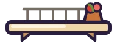
Balcony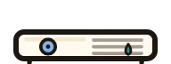
AC unit- Satellite dish
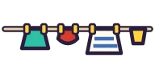
Laundry line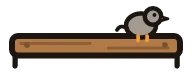
Pigeon plank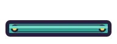
Shutter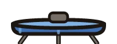
Water tank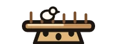
Pigeon tower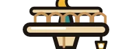
Minaret tip- Sleepy cloud
The dish is a spring. Laundry lines snap after one jump, shutters flip and vanish, and pigeon planks slide sideways.
Hazards
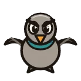
Grumpy pigeonA red line to your spot that locks just before the dive.
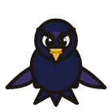
CrowA red band and a "!" on the edge it will fly in from.
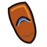
Thrown slipperA red column and a shadow on your row first. Cannot be stomped.
Plastic bagInflates, deflates and drifts across the sky.
Stomp pigeons, crows and bags from above. Slippers cannot be stomped.
- Coin
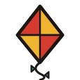
Kite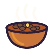
Bowl of ful- Blue bead